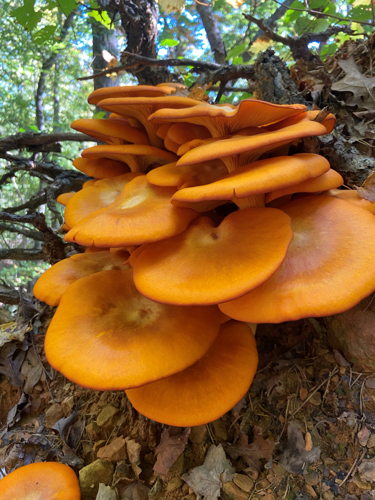
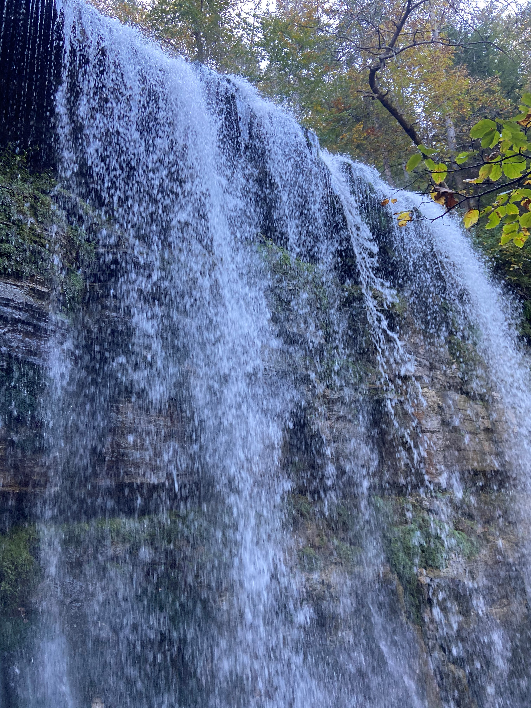
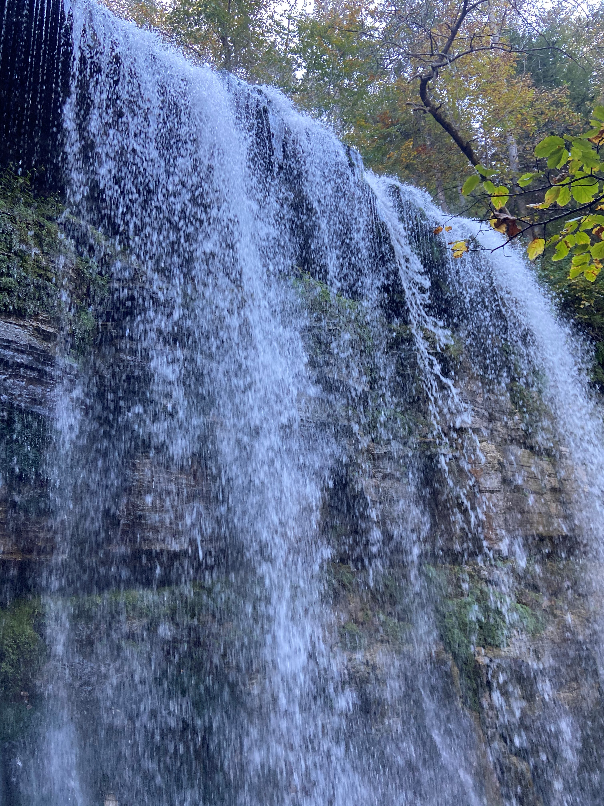

On the Trail, Living beneath our feet
In October 2020, I found myself in the middle of Tennessee hiking toward a waterfall. There were plenty of beautiful natural sights along the trail. Below are a variety of mushooms seen at this conversation area in Sparta, TN. Some of these may have been edible at one time, but I am no expert. I stuck to my granola bars on the trail. The distanced round trip from the trailhead to the falls was about 8 and one half miles. The elevation varied by more than 500 feet in multiple streches.
Big Laurel Falls
First stop was Laurel Falls. It doesn't look like much more then a mist from the photos, but it make quite refreshing to stand under the falls after hiking up 300 ft and then back down to walk into the cave. Those rocks were wicked slick.


Sheeps Cave
Before getting to the falls there is a loop that leads up to a cave with a great view out into the forest from a great height. It was nice to sit, relax and enjoy the sights, sounds, and smells of nature. I entered the cave, but I didn't want to explore to far without a hard hat, head lamp, and trail of breadcrumbs.


Virgin Falls
Finally, after almost 3 hours on a trail that resembled the track of a roller coaster, Virgins Falls were flooding all my senses. If you climb about half way up the falls, there is access to walk behind the falls. The footing is a little tricky, so proceed with caution. There is a sudo trail up the side of the falls, which takes you to the top of the falls. It calm and cool at the top of the fall. It was a good place to kick off my boots and revive my feet in the cold stream.
 
